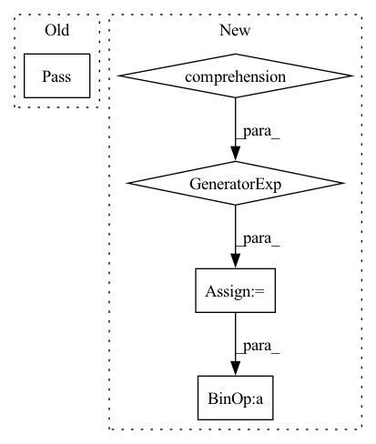

Pattern ID :18508
Before Change
def eval_precision_at_k(pred, labels, k):
pass
After Change
n_pred_k = sum((s >= threshold) for (s, _) in scores[:k])
// Number of true positive instances in top k
n_true_and_pred_k = sum(( l and (s >= threshold)) for (s, l) in scores[:k])
precision_at_k = n_true_and_pred_k / n_pred_k if n_pred_k != 0 else 0
return precision_at_k
In pattern: SUPERPATTERN
Frequency: 3
Non-data size: 5
Instances Fragment ID: 60472646
Project Name: pygod-team/pygod
Commit Name: 318a74f9f76cedcb4982c8274ddd1a8a96b62fb0
Time: 2022-03-14
Author: ytongdou@gmail.com
File Name: pygod/evaluator/metric.py
M Class Name: AnonimousClass
N Class Name: AnonimousClass
M Method Name: eval_precision_at_k(3)
N Method Name: eval_precision_at_k(3)
M Parent Class:
N Parent Class:
M File Name: pygod/evaluator/metric.py
N File Name: pygod/evaluator/metric.py
M Start Line: 38
M End Line: 39
N Start Line: 73
N End Line: 107
Before Change
def eval_recall_at_k(pred, labels, k):
pass
def eval_precision_at_k(pred, labels, k):
passAfter Change
n_true = sum(l for (_, l) in scores)
// Number of true positive instances in top k
n_true_and_pred_k = sum(( l and (s >= threshold)) for (s, l) in scores[:k])
recall_at_k = n_true_and_pred_k / n_true if n_true != 0 else 0
return recall_at_k
Fragment ID: 60472647
Project Name: pygod-team/pygod
Commit Name: 318a74f9f76cedcb4982c8274ddd1a8a96b62fb0
Time: 2022-03-14
Author: ytongdou@gmail.com
File Name: pygod/evaluator/metric.py
M Class Name: AnonimousClass
N Class Name: AnonimousClass
M Method Name: eval_recall_at_k(3)
N Method Name: eval_recall_at_k(3)
M Parent Class:
N Parent Class:
M File Name: pygod/evaluator/metric.py
N File Name: pygod/evaluator/metric.py
M Start Line: 34
M End Line: 35
N Start Line: 36
N End Line: 70
Before Change
def forward(self, *input_tensors):
assert self.finished
// TODO
pass
After Change
def forward(self, *input_tensors):
assert self.finished
weight_tensors = tuple(field .to_torch(device=self.device) for field in self.weight_fields.values())
return self.tin_func.apply(self.tin_configs, *(input_tensors + weight_tensors))
Fragment ID: 60472644
Project Name: ifsheldon/stannum
Commit Name: 6b2e1ccc378978b4ed8fe0d0eb7432b5d361af3b
Time: 2021-07-09
Author: feng.liang@kaust.edu.sa
File Name: tin.py
M Class Name: Tin
N Class Name: Tin
M Method Name: forward(1)
N Method Name: forward(1)
M Parent Class: torch.nn.Module
N Parent Class: torch.nn.Module
M File Name: tin.py
N File Name: tin.py
M Start Line: 124
M End Line: 124
N Start Line: 150
N End Line: 151